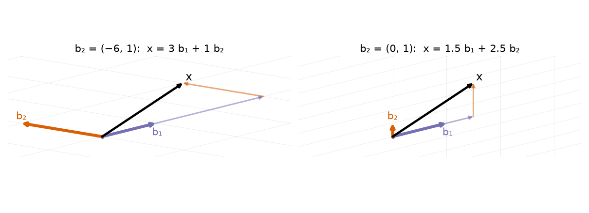
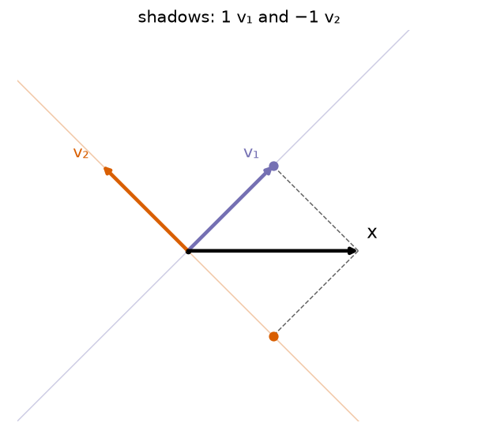
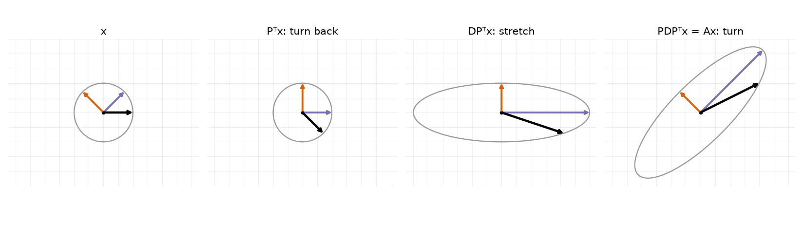
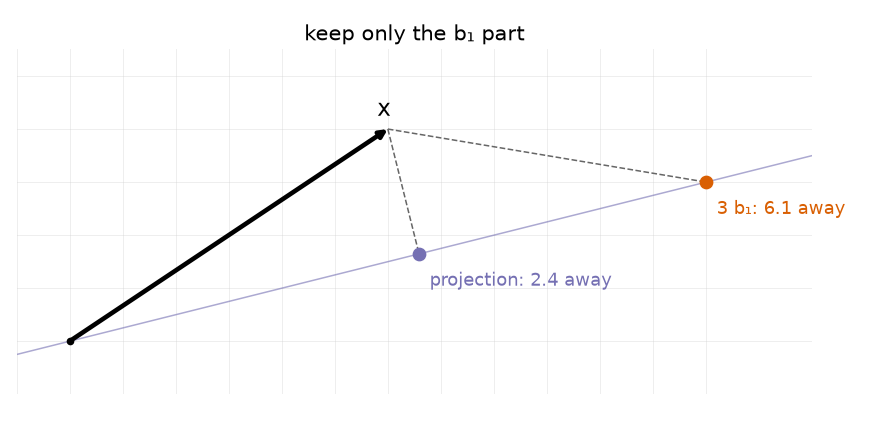

V1C = "#7570b3" // v₁ and its projection (purple)
V2C = "#d95f02" // v₂ and its projection (orange)
dot = (a, b) => a[0] * b[0] + a[1] * b[1]
viewof sh = {
const X0 = -4, X1 = 5, Y0 = -4, Y1 = 4, S = 44; // S px per unit
const W = (X1 - X0) * S, H = (Y1 - Y0) * S;
const px = p => [(p[0] - X0) * S, (Y1 - p[1]) * S];
const fromPx = (u, w) => [Math.round(u / S + X0), Math.round(Y1 - w / S)];
const v1 = [1, 1];
const state = {x: [2, 0], v2: [-1, 1]};
const svg = d3.create("svg").attr("viewBox", `0 0 ${W} ${H}`)
.style("width", "100%").style("max-width", `${W}px`)
.style("touch-action", "none");
const defs = svg.append("defs");
for (const [id, color] of [["s3a", V1C], ["s3b", V2C], ["s3x", "black"]])
defs.append("marker").attr("id", id).attr("viewBox", "0 0 10 10")
.attr("refX", 9).attr("refY", 5).attr("markerWidth", 5)
.attr("markerHeight", 5).attr("orient", "auto")
.append("path").attr("d", "M0,0L10,5L0,10z").attr("fill", color);
const g = svg.append("g");
const node = svg.node();
function seg(p, q, color, width, opts = {}) {
const [a, b] = [px(p), px(q)];
const l = g.append("line").attr("x1", a[0]).attr("y1", a[1])
.attr("x2", b[0]).attr("y2", b[1]).attr("stroke", color)
.attr("stroke-width", width).attr("stroke-opacity", opts.opacity ?? 1);
if (opts.tip) l.attr("marker-end", `url(#${opts.tip})`);
if (opts.dash) l.attr("stroke-dasharray", "5,4");
}
function dotAt(p, color, r = 6, handle = false) {
const [a, b] = px(p);
g.append("circle").attr("cx", a).attr("cy", b).attr("r", r)
.attr("fill", color).attr("fill-opacity", handle ? 0.3 : 1)
.style("cursor", handle ? "grab" : null);
}
function label(p, text, color) {
const [a, b] = px(p);
g.append("text").attr("x", a + 9).attr("y", b - 9).attr("fill", color)
.attr("font-size", 17).text(text);
}
function draw() {
g.selectAll("*").remove();
for (let k = X0; k <= X1; k++) seg([k, Y0], [k, Y1], "#999", 0.7, {opacity: 0.2});
for (let k = Y0; k <= Y1; k++) seg([X0, k], [X1, k], "#999", 0.7, {opacity: 0.2});
const {x, v2} = state;
for (const [v, c] of [[v1, V1C], [v2, V2C]])
seg([-20 * v[0], -20 * v[1]], [20 * v[0], 20 * v[1]], c, 1.5, {opacity: 0.35});
// the coordinate: walk a of v1, then b of v2, to x (as in part 1)
const det = v1[0] * v2[1] - v2[0] * v1[1];
const a = (x[0] * v2[1] - v2[0] * x[1]) / det;
const b = (v1[0] * x[1] - x[0] * v1[1]) / det;
const mid = [a * v1[0], a * v1[1]];
seg([0, 0], mid, V1C, 3, {opacity: 0.5});
seg(mid, x, V2C, 3, {opacity: 0.5});
// the projection: drop straight from x onto v1's line
const t = dot(x, v1) / dot(v1, v1), foot = [t * v1[0], t * v1[1]];
seg(x, foot, "#666", 1.2, {dash: true});
dotAt(foot, V1C);
const [ma, mb] = px(mid); // ring: the coordinate
g.append("circle").attr("cx", ma).attr("cy", mb).attr("r", 9)
.attr("fill", "none").attr("stroke", V1C).attr("stroke-width", 2.5);
seg([0, 0], x, "black", 3.5, {tip: "s3x"});
seg([0, 0], v1, V1C, 4.5, {tip: "s3a"});
seg([0, 0], v2, V2C, 4.5, {tip: "s3b"});
dotAt(x, "black", 10, true); dotAt(v2, V2C, 10, true);
label(x, "x", "black"); label(v1, "v₁", V1C); label(v2, "v₂", V2C);
node.value = {x: [...x], v2: [...v2]};
node.dispatchEvent(new Event("input", {bubbles: true}));
}
let dragging = null;
const local = e => {
const r = node.getBoundingClientRect();
return [(e.clientX - r.left) * W / r.width, (e.clientY - r.top) * H / r.height];
};
node.addEventListener("pointerdown", e => {
const [u, w] = local(e);
const dist = k => Math.hypot(px(state[k])[0] - u, px(state[k])[1] - w);
const k = dist("x") < dist("v2") ? "x" : "v2";
if (dist(k) < 26) { dragging = k; node.setPointerCapture(e.pointerId); }
});
node.addEventListener("pointermove", e => {
if (!dragging) return;
const p = fromPx(...local(e));
if (p[0] === 0 && p[1] === 0) return;
if (dragging === "v2" && p[0] * v1[1] - p[1] * v1[0] === 0) return; // not along v₁
if (p[0] !== state[dragging][0] || p[1] !== state[dragging][1]) {
state[dragging] = p; draw();
}
});
node.addEventListener("pointerup", () => { dragging = null; });
draw();
return node;
}Linear algebra 3: coordinates that measure
Change of basis, part 3: A = PDPᵀ
math
linear-algebra
Cover the right-hand column. Answer each question in your head, then look.
Part 2 found A’s two eigenvectors:
\[ A = \begin{pmatrix} 2 & 1 \\ 1 & 2 \end{pmatrix}\qquad v_1 = (1, 1),\ \text{eigenvalue } 3\qquad v_2 = (-1, 1),\ \text{eigenvalue } 1 \]
It ended with a hint: they are perpendicular. This part is about why that matters. In a perpendicular basis, a coordinate stops being a bookkeeping number and becomes a measurement.
A coordinate that depends on its neighbours

| Both pictures have the same x = (6, 4) and the same b₁ = (4, 1). What changed? | Only b₂: (−6, 1) on the left, (0, 1) on the right. |
| How much b₁ is in x, on the left? | 3, part 1’s coordinates: x = 3b₁ + b₂. |
| And on the right? | 1.5: 1.5·(4, 1) + 2.5·(0, 1) = (6, 4). |
| b₁ didn’t move. Why did its coordinate change? | Coordinates are found together, by solving a·b₁ + b·b₂ = x. Move b₂, and a must change to make up for it. |
| So is “how much b₁ is in x” a question about x and b₁? | No. It’s a question about the whole basis. |
| Can a coordinate depend only on x and its own direction? | Yes, when the basis vectors are perpendicular. |
Solving like this is how Lay finds coordinates in 4.4, Example 4: b₁ = (2, 1), b₂ = (−1, 1), x = (4, 5); 2a − b = 4 and a + b = 5 give \([x]_B = (3, 2)\). Those b’s aren’t perpendicular, so solving was the only way.
Shadows

| Take x = (2, 0). Drop a line from x’s tip straight onto v₁’s line, at a right angle. Where does it land? | At (1, 1). That is 1·v₁. |
| And straight onto v₂’s line? | At (1, −1). That is −1·v₂. |
| Are (1, −1) x’s coordinates in v’s? | Yes: 1·(1, 1) − 1·(−1, 1) = (2, 0). |
| Why did dropping a line work? | x is made of some v₁ and some v₂. The v₂ part is perpendicular to v₁’s line, so it adds nothing there. |
| What is that landing point called? | x’s shadow on the line. |
The shadow is a picture. Here are the official words, the ones Lay uses (6.1–6.2):
- the shadow is the orthogonal projection of x onto v₁’s line;
- orthogonal is the mathematician’s word for perpendicular.
From here on, we say projection and orthogonal.
To find a projection without drawing, use the dot product (Lay also calls it the inner product): multiply matching numbers and add.
\[ x \cdot v = x_1 v_1 + x_2 v_2 \]
| What is x·v₁? | (2, 0)·(1, 1) = 2·1 + 0·1 = 2. |
| And v₁·v₁? | 1 + 1 = 2. |
| How much v₁ is in x? | x·v₁ divided by v₁·v₁: 2/2 = 1. |
| And how much v₂? | x·v₂ = −2, v₂·v₂ = 2, so −1. |
| What does a dot product of 0 mean? | Orthogonal: the projection lands at 0. Check v₁·v₂ = −1 + 1 = 0. |
NoteThe Law of Measurement
When the basis is orthogonal, each coordinate is a measurement of x along one direction: (x·v) / (v·v). It depends on x and v, and on nothing else.
| So what is x’s coordinate along v₁ now? | A measurement: how far x reaches along v₁. v₂ never comes into it. |
| Is it quicker, too? | One dot product per coordinate, no equations. The speed comes from the independence. |
Now try it yourself. The faint path walks x’s coordinates: so much v₁, then so much v₂. The ring is x’s coordinate along v₁; the dot is its projection onto v₁. Drag the tip of x: while v₁ and v₂ are orthogonal, ring and dot stay together. Then tilt v₂: the ring slides away, and the dot stays put.
Lay writes the projection itself, the point where the dropped line lands, with a hat:
\[ \hat x = \frac{x\cdot v}{v\cdot v}\,v \]
the coordinate times the vector. Try his 6.2, Example 3, with x = (7, 6) and v = (4, 2).
| What is x·v? | 7·4 + 6·2 = 40. |
| And v·v? | 16 + 4 = 20. So the coordinate along v is 2. |
| What is x̂? | 2v = (8, 4). |
| How far is x from v’s line? | x − x̂ = (−1, 2), of length √(1 + 4) = √5. That is his Example 4. |
Lengths come out right
A measurement should also get lengths right. Does a coordinate?
| In part 1’s basis, x = (6, 4) has coordinates (3, 1). What is 3² + 1²? | 10. |
| What is x’s length squared, 6² + 4²? | 52. Those coordinates don’t know how long x is. |
| In our v’s, x = (2, 0) has coordinates (1, −1). What is 1² + (−1)²? | 2. But x’s length squared is 4. Closer, still wrong. |
| Why? | Each v has length √2, not 1. A coordinate counts v’s, and each v is longer than a unit. |
So make each basis vector length 1. Dividing each v by its length, which Lay writes ‖v‖ = √(v·v) (6.1), here √2, is called normalizing; the result is a unit vector. Call them u₁ and u₂. Orthogonal and of length 1, they are orthonormal.
| What are x’s coordinates in u’s? | Measure: x·u₁ = 2/√2 = √2, and x·u₂ = −2/√2 = −√2. No dividing by u·u, which is 1. |
| What is (√2)² + (−√2)²? | 2 + 2 = 4. x’s length squared, at last. |
| Is that luck? | No. It is Pythagoras: x is √2 of u₁ plus −√2 of u₂, at a right angle. |
| Do angles come out right too? | Yes. Dot products of coordinates equal dot products of the arrows, and angles come from dot products. |
NoteThe Law of Length
In an orthonormal basis, ‖x‖² is the sum of the squares of x’s coordinates. Lengths and angles read off the coordinates are the true ones.
An orthonormal basis is a turned grid
Put u₁ and u₂ in a matrix as columns. Lay keeps the name P, as in part 2; the difference is that its columns now have length 1:
\[ P = \frac{1}{\sqrt2}\begin{pmatrix} {\color{#7570B3}1} & {\color{#D95F02}-1} \\ {\color{#7570B3}1} & {\color{#D95F02}1} \end{pmatrix}\qquad P^{\mathsf T} = \frac{1}{\sqrt2}\begin{pmatrix} {\color{#7570B3}1} & {\color{#7570B3}1} \\ {\color{#D95F02}-1} & {\color{#D95F02}1} \end{pmatrix} \]
| What is Pᵀ? | P’s columns laid down as rows. Say “P transpose”. |
| What does Pᵀ do to x? | Each row is a u, so each entry is a measurement x·u: x’s coordinates in u’s. |
| So what undoes P? | Pᵀ. In part 2, P⁻¹ had to be worked out; here it is P read sideways. |
| Look back at part 2’s P⁻¹, (½ ½; −½ ½). What was it? | The v’s as rows, halved: the measurements, divided by v·v = 2. |
| What does P do to the page? | Turns it by 45°: it sends (1, 0) to u₁. Pᵀ turns it back. |
| What does a turn keep? | More than any other change of basis: eigenvalues and area, as every change of basis does (part 2), and lengths and angles too. |
| What does Lay call such a P? | An orthogonal matrix: square, orthonormal columns, P⁻¹ = Pᵀ. In 6.2 he names one U. |
Part 2’s three steps become turn back, stretch, turn:
\[ A = P\,D\,P^{\mathsf T}\qquad D = \begin{pmatrix} 3 & 0 \\ 0 & 1 \end{pmatrix} \]

| In the second picture, where are u₁ and u₂? | Along the usual grid. Pᵀ turned them there. |
| What does D do to the circle? | Stretches it three times wider, along u₁. |
| And the last step? | P turns everything back. x lands at (4, 2), as in part 2. |
NoteThe Law of the Turn
An orthonormal basis is the usual grid, turned. A = P D Pᵀ: turn back, stretch, turn. A symmetric matrix is a pure stretch along perpendicular axes.
Why A’s eigenvectors are orthogonal
A is symmetric: flip it across its diagonal and it is unchanged. The 1 above the diagonal matches the 1 below it.
We’ll work out one number, (Av₁)·v₂, in two ways.
| First way: A stretches v₁ by 3. So what is (Av₁)·v₂? | 3(v₁·v₂). |
| Second way: move A across the dot, onto v₂. Is (Av₁)·v₂ the same as v₁·(Av₂)? | For symmetric A, yes. That’s the one fact we need; it’s checked below. |
| A stretches v₂ by 1. So what is v₁·(Av₂)? | 1(v₁·v₂). |
| Both ways give the same number. So 3(v₁·v₂) = v₁·v₂. Which number is three times itself? | Only 0. So v₁·v₂ = 0: orthogonal. |
Why can A move across the dot? Write out both sides for any v and w:
\[ \begin{aligned} (Av)\cdot w &= (2v_1 + {\color{#D95F02}1}v_2)\,w_1 + ({\color{#D95F02}1}v_1 + 2v_2)\,w_2\\ v\cdot(Aw) &= v_1\,(2w_1 + {\color{#D95F02}1}w_2) + v_2\,({\color{#D95F02}1}w_1 + 2w_2) \end{aligned} \]
| Multiply out. Which terms does each line have? | Both have 2v₁w₁, 2v₂w₂, v₂w₁ and v₁w₂. Equal. |
| Which number did that rely on? | The two orange 1s being the same: A’s symmetry. |
| What if A were part 4’s matrix (3 0; 4 5)? | Its corners differ (0 and 4), the two sides differ, and its eigenvectors aren’t orthogonal. |
NoteThe Law of Symmetry
A symmetric matrix can move across a dot product. So its eigenvectors, with different eigenvalues, are orthogonal.
To check your understanding, here is Lay’s 7.1, Example 4:
\[ \begin{pmatrix} 7 & 2 \\ 2 & 4 \end{pmatrix} \]
| Is it symmetric? | Yes: the 2 above the diagonal matches the 2 below it. |
| Where does it send (2, 1)? And (−1, 2)? | To (16, 8) = 8·(2, 1), and to (−3, 6) = 3·(−1, 2). Eigenvectors, with eigenvalues 8 and 3. |
| Are they orthogonal? | (2, 1)·(−1, 2) = −2 + 2 = 0. Yes, as the Law says. |
Keep only the biggest part
A measurement lets us do one more thing: throw coordinates away. Back to part 1’s x = (6, 4), and keep only what lies along b₁ = (4, 1).

| In part 1’s basis, x’s b₁ part is 3b₁. Where is it? | (12, 3), about 6.1 from x. Far off. |
| Now take x’s projection onto b₁’s line instead. Where is it? | (28/17)·(4, 1), about (6.6, 1.6): about 2.4 from x. |
| Is any point on that line closer to x? | No. The dashed line meets it at a right angle, so the projection is the nearest point. |
| Which basis keeps exactly that point? | An orthonormal one with u₁ along b₁. Its first coordinate is a measurement, so keeping it alone is as close as that direction can get. |
NoteThe Law of the Nearest Point
In an orthonormal basis, keep only some coordinates, and you get the nearest point those directions can reach: the projection.
| Do these three laws need A to be symmetric? | No. Measuring, lengths and nearest points hold in any orthonormal basis. Symmetry only makes A’s eigenvectors one. |
| Most matrices aren’t symmetric. Is that the end? | No. Part 4 gives every matrix an orthonormal basis going in and another coming out, then uses the nearest point to find the best line through data. |
In Lay
Section and example numbers from [Lay16].
| Here | Lay |
|---|---|
| shadow | orthogonal projection, x̂ (6.2; he writes ŷ) |
| perpendicular | orthogonal (6.1) |
| dot product | inner product, u·v (6.1) |
| a coordinate is a measurement, (x·v)/(v·v) | the weights, 6.2 Theorem 5 |
| length, made 1 | ‖v‖, normalizing, unit vector (6.1) |
| orthogonal, length 1 | orthonormal (6.2) |
| the Law of Length | 6.2 Theorem 7: ‖Ux‖ = ‖x‖, (Ux)·(Uy) = x·y |
| P, with P⁻¹ = Pᵀ | orthogonal matrix; U in 6.2 (6.2, 7.1) |
| A = P D Pᵀ | orthogonally diagonalizable (7.1) |
| the Law of Symmetry | 7.1 Theorem 1 |
| every symmetric matrix has one | the Spectral Theorem (7.1) |
| the Law of the Nearest Point | the Best Approximation Theorem, 6.3 Theorem 9 |